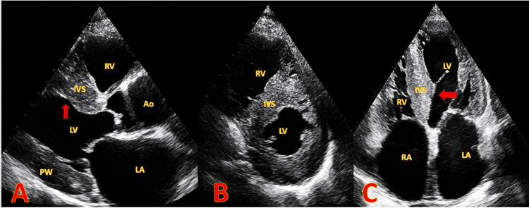
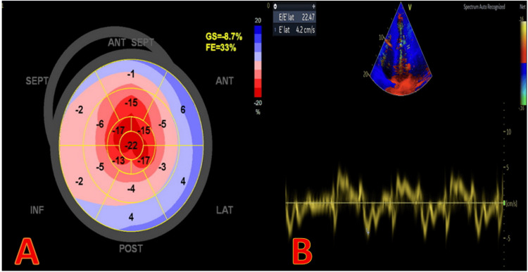
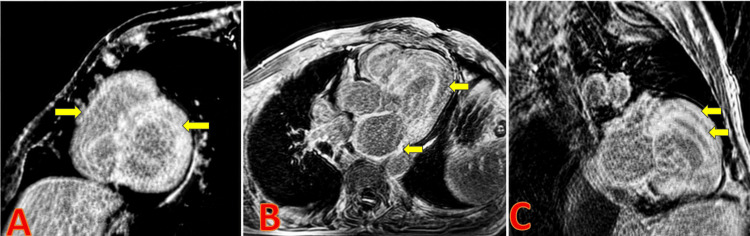
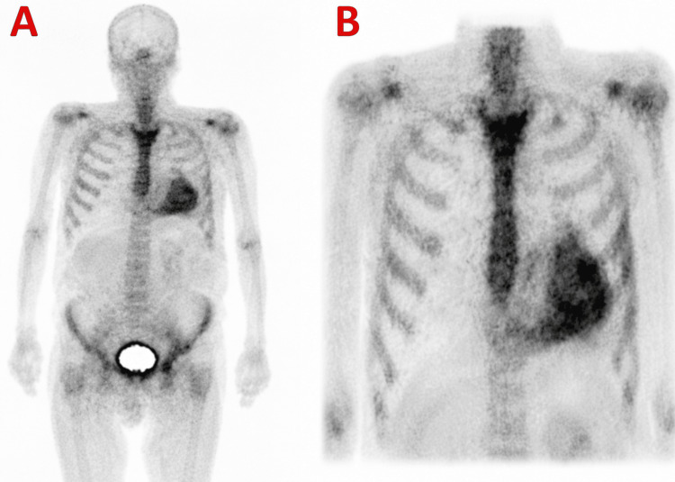

1886 — Bệnh cơ tim do amyloid: dày thất "giả", apical sparing và xạ hình xương / Cardiac amyloidosis
Tags: pattern:day-co-tim pattern:LGE-duoi-noi-tam-mac pattern:apical-sparing pattern:hap-thu-xuong vung:cotim vung:tim protocol:MRI-tim protocol:sieutham-Doppler protocol:xa-hinh-xuong score:Perugini
Mức chắc chắn (certainty): tổng hợp y văn (literature synthesis) — ghép 1 tổng quan hình ảnh đa phương thức (J Clin Med 2025;15:163, PMC12786694, CC BY), 1 tổng quan lâm sàng–chẩn đoán–điều trị (Aust Prescr 2026, PMC13696863, CC BY-NC-ND), 1 phân tích tổng hợp về relative apical sparing (J Clin Med 2026, PMC12986376, CC BY) và 1 ca bệnh đa phương thức có đủ 4 ảnh (Cureus 2026, PMC13477558, CC BY). Không có thử nghiệm ngẫu nhiên nào về ngưỡng hình ảnh.
Câu chốt: amyloid tim không phải bệnh "cơ tim dày" mà là bệnh chất nền ngoại bào bị lấp → thành dày nhưng điện thế thấp, hạn chế đổ đầy, và trên hình ảnh ngấm thuốc dưới nội tâm mạc lan tỏa + ECV > 0,40. Chẩn đoán xác định không cần sinh thiết khi xạ hình xương Perugini 2–3 + không có protein đơn dòng; và chẩn đoán phân biệt dễ sai nhất là viêm màng ngoài tim co thắt (bài 1885) — hai bệnh cùng "tim không giãn, nhĩ to, phù" nhưng e' và septal shift ngược nhau.
1. Tổng quan bệnh học – cơ chế hình ảnh (TẠI SAO)
1.1 Chất nền ngoại bào bị lấp, không phải cơ tim phì đại
- Bệnh học: protein gấp sai (transthyretin — ATTR; hoặc chuỗi nhẹ immunoglobulin — AL) tạo sợi amyloid dạng tấm β (cross-β sheet), lắng ngoài tế bào cơ tim. Tế bào cơ không to lên; khoảng kẽ nở ra → thành dày giả phì đại (pseudohypertrophy).
- 98% amyloid tim là ATTR hoặc AL (PMC13696863). ATTR hiện là thể phổ biến nhất; AL hiếm (≈ 10 ca/triệu dân/năm) nhưng tiến triển nhanh nhất — sống trung bình < 6 tháng nếu chưa điều trị và đã có triệu chứng suy tim (PMC12786694).
- TẠI SAO điện thế thấp dù thành dày: tín hiệu điện do tế bào cơ phát ra, nhưng chất nền dẫn điện kém (amyloid) làm tản và hấp thụ điện thế → biên độ QRS thấp, không tương xứng với khối cơ. Đây là nghịch lý "dày trên siêu âm – thấp trên ECG", gặp rõ hơn ở AL; không có nghĩa là loại trừ được ATTR (nhiều ca ATTR có QRS bình thường).
- 13,3% bệnh nhân ≥ 60 tuổi nhập viện vì HFpEF + dày thất trái được phát hiện ATTR thể hoang dã khi sàng lọc tiền cứu (PMC13477558 dẫn nghiên cứu sàng lọc) — nghĩa là bệnh không hiếm, chỉ không được nghĩ tới.
1.2 Bốn cơ chế hình ảnh và TẠI SAO
- Siêu âm — dày + "lấm tấm" (granular sparkling): amyloid và xơ làm mặt phân cách âm học dày lên trong cơ tim → nhiều phản xạ nhỏ, lốm đốm. Tần số đầu dò và gain thay đổi hình này → độ đặc hiệu thấp, không dùng một mình để chẩn đoán. Giá trị thật của siêu âm là dày ≥ 12 mm + hạn chế đổ đầy + nhĩ to + van dày, và strain.
- Siêu âm — apical sparing: sợi amyloid/xơ tập trung nhiều ở vùng đáy và giữa hơn mỏm, nên biến dạng dọc (longitudinal strain) mất ở đáy–giữa nhưng còn ở mỏm. Đo bằng GLS theo 17 vùng: RASP = strain trung bình mỏm ÷ trung bình (đáy + giữa), > 1 là bất thường; Se 93%, Sp 82% để phân biệt amyloid với các nguyên nhân dày thất khác (PMC12786694). Nhưng phân tích tổng hợp 2026 cho thấy mức khác biệt nhỏ hơn nhiều trên CMR-FT (SMD 0,59) so với 2D-STE (SMD 2,15) — tức apical sparing là dấu hiệu siêu âm mạnh, không phải "chân lý tuyệt đối", và gặp cả ở hẹp van động mạch chủ nặng, HCM, tăng huyết áp (PMC12986376).
- MRI — LGE dưới nội tâm mạc + ECV cao: gadolinium chỉ ra ngoài mạch ở khoảng kẽ; khi khoảng kẽ bị amyloid lấp rộng, thể tích phân bố gadolinium tăng → ngấm muộn dưới nội tâm mạc lan tỏa, và ECV (thể tích ngoại bào) tăng > 0,40 (bình thường ≈ 0,25). Vì rửa gadolinium chậm, cơ tim "tối" (null) TRƯỚC khi máu trong buồng tim tối — đảo ngược động học nulling, dấu hiệu đặc trưng trên ảnh TI scout/PSIR. Ba kiểu LGE — không có / dưới nội tâm mạc / xuyên thành — tiên lượng xấu dần theo thứ tự này (PMC12786694).
- Xạ hình xương — vì sao bắt được ATTR: các tracer 99mTc-PYP / DPD / HMDP gắn vào vi tinh thể calci trong sợi amyloid; ATTR đọng nhiều và đậm đặc hơn AL nên nhạy hơn hẳn. Đọc định tính theo Perugini: 0 không ngấm, 1 nhẹ (ít hơn xương sườn), 2 bằng xương sườn, 3 đậm hơn xương sườn; chỉ 2–3 mới có giá trị chẩn đoán ATTR. Định lượng phụ: tỷ lệ tim/phổi đối diện (H/CL) > 1,5 ở 1 giờ hỗ trợ — ca trong bài có H/CL = 2,2.
1.3 Ngưỡng định lượng nằm lòng
| Đại lượng | Ngưỡng / số liệu | Nguồn |
|---|---|---|
| Dày thành thất trái trên siêu âm | > 12 mm (đo cuối tâm trương, vách + thành sau) | PMC12786694 |
| Relative apical sparing (RASP) | strain mỏm ÷ (đáy + giữa) > 1; Se 93% / Sp 82% | PMC12786694 |
| RASP — mức khác biệt gộp | 2D-STE SMD 2,152 (95% CI 1,354–2,950) vs CMR-FT SMD 0,594 (0,405–0,782) | PMC12986376 |
| ECV trên CMR | > 0,40; bình thường ≈ 0,25 | PMC12786694 |
| Động học gadolinium | cơ tim null TRƯỚC buồng tim (đảo ngược) | PMC12786694 |
| Xạ hình xương | Perugini 2–3 + không protein đơn dòng → chẩn đoán ATTR không sinh thiết | PMC12786694; PMC13696863 |
| H/CL thì 1 giờ | > 1,5 hỗ trợ (ca minh họa: 2,2) | PMC13477558 |
| Bệnh nhân ATTR có kèm protein đơn dòng | tới 30% → bắt buộc sinh thiết trước khi kết luận | PMC13696863 |
| Tỉ lệ amyloid tim do ATTR/AL | 98% | PMC13696863 |
| AL có suy tim, chưa điều trị | sống trung bình < 6 tháng | PMC12786694 |
| ATTR thể hoang dã ở HFpEF + dày thất, ≥ 60 tuổi | 13,3% | PMC13477558 (dẫn nghiên cứu sàng lọc) |
| Độ chắc chắn loại AL khi 3 xét nghiệm đơn dòng âm | 98% | PMC13696863 |
2. Mẫu hình + chẩn đoán phân biệt theo vị trí (Gamut)
Mẫu hình chung: dày thất trái (và thường cả thất phải) ≥ 12 mm, buồng thất nhỏ, hai nhĩ to, van dày, tràn dịch màng ngoài tim nhỏ, tĩnh mạch chủ dưới căng; bệnh nhân khó thở khi gắng sức + phù + mệt, EF có thể bảo tồn (HFpEF) hoặc giảm muộn (ca minh họa EF 33%); rung nhĩ/flutter nhĩ và bệnh dẫn truyền rất thường gặp (ca minh họa khởi phát bằng block nhĩ–thất hoàn toàn).
- Theo cơ chất: ATTR (dày nhiều, xạ hình dương, tiến triển chậm, tuổi cao hoặc có bệnh cảnh "ống cổ tay" hai bên, hẹp ống sống thắt lưng, rách gân nhị đầu) · AL (tiến triển nhanh, lưỡi to, ban xuất huyết quanh hốc mắt, đa dây thần kinh, protein niệu, điện thế rất thấp) · thể phối hợp (hiếm).
- Theo vị trí ngấm thuốc: dưới nội tâm mạc toàn chu vi (điển hình) · từng vùng chắp vá (thể AL không điển hình — có ca không có apical sparing và giãn thất, dễ bị gọi là DCM — PMC13699083) · xuyên thành (muộn, tiên lượng xấu).
- Gamut "dày thất trái không giải thích được ở người ≥ 60 tuổi": amyloid (ATTR/AL) · tăng huyết áp · hẹp van động mạch chủ · HCM · bệnh Fabry · bệnh tim do thận mạn/lọc máu (β2-microglobulin) · sarcoid tim · bệnh cơ tim do thuốc (hydroxychloroquine, anthracycline).
- Gamut "tim không giãn + nhĩ to + phù, EF bảo tồn": amyloid tim · viêm màng ngoài tim co thắt (bài 1885) · hở van ba lá nặng · tăng áp phổi nặng · xơ gan — đây là nhóm sai lầm hay gặp nhất, vì cả hai bệnh đều có thể có dày màng ngoài tim và tràn dịch ít.
3. Bảng so sánh phân biệt (ma trận đối chiếu)
| Thực thể (entity) | Hình ảnh điển hình | Chốt vào (rule-in) | Chốt loại (rule-out) | Gợi ý xác nhận |
|---|---|---|---|---|
| Amyloid ATTR | Dày ≥ 12 mm cả 2 thất, nhĩ to, van dày; LGE dưới nội tâm mạc lan tỏa; ECV > 0,40; xạ hình Perugini 2–3; apical sparing | Xạ hình 2–3 + protein đơn dòng ÂM → chẩn đoán không cần sinh thiết | Protein đơn dòng DƯƠNG (không loại được AL) · xạ hình grade 0–1 · ECV < 0,30 | Xạ hình + SPECT/CT; FLC + IFE máu/nước tiểu; gen TTR nếu tuổi trẻ/gia đình |
| Amyloid AL | Dày thất, điện thế rất thấp, LGE dưới nội tâm mạc hoặc chắp vá, phù cơ tim (T2 cao); tổn thương ngoài tim | Protein đơn dòng + FLC bất thường + LGE/ECV cao | Xạ hình grade 2–3 mà AL không loại trừ được → vẫn phải sinh thiết | Sinh thiết mô mỡ ổ bụng hoặc cơ tim; Congo red + phân type |
| HCM | Dày bất đối xứng vách, hẹp đường ra, sóng Q bệnh lý, LGE chỗ nối thất phải–vách (patchy, không toàn chu vi) | Dày bất đối xứng + hẹp đường ra + di truyền | ECV > 0,40 + LGE dưới nội tâm mạc toàn chu vi → amyloid | Siêu âm gắng sức; CMR; gen sarcomere |
| Tăng huyết áp / hẹp van ĐMC | Dày đồng tâm, ECV bình thường hoặc tăng nhẹ (0,28–0,32), không ngấm dưới nội tâm mạc toàn chu vi | Tăng huyết áp lâu năm + không có LGE điển hình | ECV > 0,40 + xạ hình 2–3 → amyloid | Đo huyết áp; siêu âm van; loại trừ bằng ECV |
| Bệnh Fabry | Dày đồng tâm, LGE dưới nội tâm mạc thành dưới–bên (inferolateral), T1 native THẤP | LGE dưới–bên + T1 thấp + giảm đau tay/chân, phát ban | T1 cao + ECV > 0,40 + LGE toàn chu vi → amyloid | Men α-galactosidase A; gen GLA |
| Viêm màng ngoài tim co thắt (1885) | Dày ± vôi hóa màng ngoài tim, septal bounce/shift, medial e' ≥ 9 cm/s, biến thiên dòng vào van hai lá ≥ 25% | Dấu hiệu động phụ thuộc nhịp thở + vôi hóa | ECV > 0,40 + LGE dưới nội tâm mạc + e' thấp → amyloid | Siêu âm Doppler + CT (canxi) + MRI |
| Bệnh cơ tim giãn (DCM) có LGE | Giãn thất, thành mỏng hoặc bình thường, LGE giữa thành | Giãn + EF thấp + LGE giữa thành | Dày ≥ 12 mm + ECV cao → amyloid (thể AL giãn thất là ngoại lệ — PMC13699083) | CMR; loại trừ nguyên nhân |

Nữ 70 tuổi, ngất khi gắng sức, block nhĩ–thất hoàn toàn. (A) Trục dài cạnh ức: vách liên thất (IVS) và thành sau (PW) dày, buồng thất nhỏ, nhĩ trái to. (B) Trục ngắn: dày đồng tâm. (C) Bốn buồng từ mỏm: dày cả thất phải, hai nhĩ to (mũi tên đỏ). Nguồn: Cureus 2026 (PMC13477558), Fig. 2, CC BY 4.0.4. Protocol chụp + hệ phân độ điểm chuẩn hóa
4.1 Trình tự bắt buộc: loại AL trước, rồi mới xạ hình
- Xét nghiệm đơn dòng TRƯỚC mọi thứ khác: điện di + immunofixation máu và nước tiểu, free light chain huyết thanh. Ba xét nghiệm âm → loại AL với độ chắc chắn 98% (PMC13696863). Tuyệt đối không làm xạ hình trước rồi mới tìm đơn dòng.
- Siêu âm tim (2D + Doppler + strain 2D): đo vách, thành sau, thành tự do thất phải ở cuối tâm trương, thể tích nhĩ trái, EF, GLS và RASP, độ hạn chế đổ đầy, van, màng ngoài tim, tĩnh mạch chủ dưới.
- Xạ hình xương (99mTc-PYP/DPD/HMDP): chụp phẳng 1 giờ (để tính H/CL) và 2–3 giờ + SPECT/CT; đọc Perugini và xác nhận ngấm trong cơ tim (không phải máu trong buồng).
- MRI tim khi cần định lượng/tiên lượng hoặc chẩn đoán chưa rõ: cine SSFP, T1 mapping (native + sau tiêm) → ECV, LGE PSIR; chú ý eGFR < 30 khi dùng gadolinium.
- Sinh thiết (mô mỡ ổ bụng hoặc cơ tim) khi: protein đơn dòng dương, xạ hình 0–1 mà vẫn nghi, hoặc cần phân type trước điều trị đặc hiệu.
4.2 Sơ đồ quyết định
flowchart TD A[Nghi amyloid tim: HFpEF + dày ≥ 12 mm + cờ đỏ] --> B[FLC + IFE máu và nước tiểu] B -->|Dương| C[Sinh thiết + huyết học cấp] B -->|Âm| D[Xạ hình PYP/DPD/HMDP + SPECT] D -->|Perugini 0-1| E[Siêu âm strain + MRI: tìm nguyên nhân khác] D -->|Perugini 2-3| F[ATTR-CM: chẩn đoán không cần sinh thiết] F --> G[Gen TTR nếu tuổi trẻ hoặc có gia đình] E -->|ECV > 0,40 + LGE dưới nội tâm mạc| H[Sinh thiết cơ tim] E -->|ECV bình thường| I[HCM / tăng huyết áp / Fabry / hẹp van ĐMC]
4.3 Điều trị — vì sao hình ảnh phải sớm
- ATTR: tafamidis (ổn định tetramer, giảm tử vong và nhập viện tim mạch — lợi ích lớn hơn khi bắt đầu sớm), vutrisiran (tiêm dưới da mỗi 3 tháng, cần bổ sung vitamin A); SGLT2 inhibitor và lợi tiểu cho suy tim; kháng đông cho MỌI rung nhĩ/flutter nhĩ, không phụ thuộc điểm CHA₂DS₂-VA (PMC13696863); máy tạo nhịp khi block tiến triển.
- AL: hóa trị hướng tế bào plasma (phác đồ có daratumumab), ghép tế bào gốc ở ca chọn lọc — cấp cứu huyết học, không chờ hình ảnh hoàn tất.
- Vì sao "chẩn đoán sớm" là can thiệp hình ảnh: bệnh nhân thường đã có nhiều năm "dày thất không rõ nguyên nhân", hội chứng ống cổ tay hoặc hẹp ống sống trước khi có suy tim — mỗi lần chụp vì lý do khác là cơ hội phát hiện, và thuốc chỉ làm chậm chứ không đảo ngược được chất nền đã lấp.
5. Biến thể bình thường và cạm bẫy
- Cạm bẫy 1 — "lấm tấm" (granular sparkling) không đặc hiệu: phụ thuộc gain, tần số, cửa sổ, gặp ở tăng huyết áp, HCM, thận mạn. Không chẩn đoán chỉ vì hình này.
- Cạm bẫy 2 — xạ hình grade 1 bị đọc thành dương: chỉ 2–3 mới đủ; grade 1 gặp ở người già, sau nhồi máu, bệnh cơ tim khác. Luôn so với xương sườn cùng thì và xem SPECT để loại hoạt độ trong buồng tim.
- Cạm bẫy 3 — "xạ hình dương là xong": tới 30% bệnh nhân ATTR có kèm MGUS; xạ hình dương + đơn dòng dương không loại được AL → bắt buộc sinh thiết (PMC13696863).
- Cạm bẫy 4 — apical sparing bị dùng như tiêu chuẩn vàng: gặp cả ở hẹp van ĐMC nặng, HCM, tăng huyết áp; trên CMR-FT mức khác biệt nhỏ (SMD 0,59) (PMC12986376). Thiếu ECV/LGE thì không đủ.
- Cạm bẫy 5 — thể AL "giãn thất" không điển hình: có ca thành chỉ 12 mm, EF giảm, KHÔNG có apical sparing, LGE chắp vá → dễ bị gọi là DCM (PMC13699083). Đừng loại amyloid chỉ vì thất giãn hoặc không có apical sparing.
- Cạm bẫy 6 — nhầm với viêm màng ngoài tim co thắt: cùng "tim không giãn + nhĩ to + phù"; amyloid có e' THẤP, không septal shift, ECV cao, LGE dưới nội tâm mạc; co thắt có e' ≥ 9 cm/s, septal shift, vôi hóa (bài 1885). Nhầm → cắt màng ngoài tim vô ích.
- Cạm bẫy 7 — bỏ sót thất phải: dày thành tự do thất phải ≥ 5–6 mm kèm dày vách là dấu hiệu mạnh của bệnh hệ thống; nhiều báo cáo chỉ đo thất trái rồi kết luận "HCM".
- Biến thể bình thường cần biết: dày nhẹ đồng tâm ở người tập luyện/tăng huyết áp (ECV bình thường); tràn dịch màng ngoài tim lượng ít; nhĩ trái dãn nhẹ theo tuổi; "bright" cơ tim ở người già do collagen — tất cả đều KHÔNG ngấm gadolinium kiểu dưới nội tâm mạc toàn chu vi.
6. Tự lượng giá — Blind Quiz (ảnh ngoài, đáp án trong khối chi tiết)
Ca 1 — nữ 70 tuổi, ngất khi gắng sức
- Gợi ý lâm sàng: ngất khi gắng sức, ECG có block nhĩ–thất hoàn toàn, không đau ngực.
- Câu hỏi: Mô tả bất thường chính? Ba chẩn đoán phân biệt? Dấu hiệu nào trên siêu âm khiến phải nghĩ tới bệnh hệ thống chứ không phải HCM?
Bấm để hiện đáp án (findings + chẩn đoán)
- Dấu hiệu (findings): dày đồng tâm vách và thành sau, buồng thất nhỏ, hai nhĩ to, dày cả thành tự do thất phải, cơ tim "lấm tấm"; kèm hạn chế đổ đầy.
- Chẩn đoán (diagnosis): bệnh cơ tim do amyloid — dày hai thất + nhĩ to + hạn chế đổ đầy là bộ ba của bệnh lấp khoảng kẽ, không phải phì đại cơ (HCM thường bất đối xứng, thất phải ít dày).
- Vì sao: amyloid ngoại bào → thành dày mà tế bào cơ không to → điện thế thấp dù khối cơ lớn.
- Nguồn ảnh: Cureus 2026 (PMC13477558), Fig. 2, CC BY 4.0.
Ca 2 — cùng bệnh nhân, đánh giá biến dạng cơ tim

- Gợi ý lâm sàng: EF 33%, không có bệnh mạch vành tắc nghẽn.
- Câu hỏi: Đọc GLS và mô hình phân bố? Tính RASP theo công thức mỏm ÷ (đáy + giữa)? Vì sao mô hình này lại xuất hiện?
Bấm để hiện đáp án (findings + chẩn đoán)
- Dấu hiệu (findings): GLS = −8,7% (giảm nặng); bản đồ 17 vùng cho thấy đáy và giữa giảm nhiều (−1 đến −6%), mỏm giữ nguyên (−15 đến −22%) → apical sparing; RASP ≈ 15–20 ÷ 3–4 > 1.
- Chẩn đoán (diagnosis): apical sparing trong bệnh amyloid tim — Se 93% / Sp 82% khi so với nguyên nhân dày thất khác (PMC12786694).
- Vì sao: amyloid/xơ tập trung ở đáy–giữa nhiều hơn mỏm → mất biến dạng dọc vùng đáy–giữa, còn mỏm; không phải dấu hiệu bệnh mạch vành (vành theo lãnh thổ, không theo trục dọc).
- Nguồn ảnh: Cureus 2026 (PMC13477558), Fig. 3, CC BY 4.0.
Ca 3 — cùng bệnh nhân, cắt lớp và xạ hình

- Gợi ý lâm sàng: FLC và immunofixation âm; chưa sinh thiết.
- Câu hỏi: Mô tả kiểu ngấm thuốc trên CMR và vì sao ECV tăng? Hình xạ hình (xem ảnh thứ hai) cho Perugini mấy? Có cần sinh thiết không?

Bấm để hiện đáp án (findings + chẩn đoán)
- Dấu hiệu (findings): CMR — ngấm thuốc dưới nội tâm mạc toàn chu vi ở trục ngắn và bốn buồng, nulling cơ tim trước buồng tim; xạ hình — ngấm đậm trong cơ tim, đậm hơn xương sườn → Perugini 3.
- Chẩn đoán (diagnosis): ATTR-CM — Perugini 2–3 + protein đơn dòng âm đủ để chẩn đoán không cần sinh thiết (PMC12786694; PMC13696863).
- Vì sao: gadolinium phân bố vào khoảng kẽ đã bị amyloid lấp → ECV > 0,40 và rửa thuốc chậm; tracer xương gắn vi tinh thể calci của sợi ATTR, đậm hơn AL.
- Nguồn ảnh: Cureus 2026 (PMC13477558), Fig. 4 và Fig. 5, CC BY 4.0.
Bài liên quan chéo
- 1885 – Viêm màng ngoài tim co thắt — bệnh bắt chước số 1, dấu hiệu ngược chiều.
- 820 – MRI tim: LGE xuyên thành vs giữa/dưới thượng tâm mạc — nền tảng vật lý LGE/mapping.
- 127 – Gan tim, suy tim phải — hệ quả huyết động của tim hạn chế.
- 810 – CTA động mạch vành / CAD-RADS — loại trừ bệnh mạch vành trước khi quy "dày thất".
Ảnh
- Bốn ảnh từ một ca (Cureus 2026, PMC13477558, CC BY 4.0): echo (Fig. 2), strain (Fig. 3), CMR LGE (Fig. 4), xạ hình HMDP (Fig. 5). Không tạo ảnh ghép vì mỗi hình vốn là bảng nhiều panel của cùng một bệnh nhân.
- Chi tiết nguồn + giấy phép từng file:
images/CREDITS.md.
Không dùng để chẩn đoán độc lập khi chưa có người hướng dẫn.